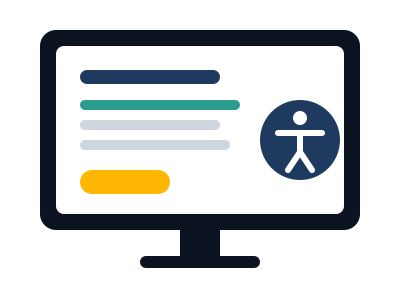
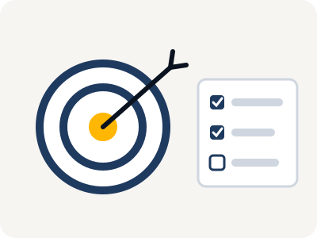
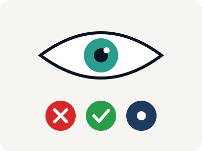

Acessibilidade começa com informação
Acessibilidade é criar espaços, serviços e tecnologias que possam ser utilizados por pessoas com diferentes necessidades.
No ambiente digital, pequenas escolhas de design e desenvolvimento podem fazer uma grande diferença na forma como uma pessoa acessa, compreende e utiliza uma informação.
Neste site você encontra informações sobre TDAH e daltonismo, além de exemplos e boas práticas para tornar sites mais inclusivos.
Conheça o TDAH Conheça o daltonismo
O que é acessibilidade digital?
A acessibilidade digital busca tornar sites, aplicativos, sistemas e outros conteúdos digitais mais fáceis de utilizar por diferentes pessoas.
Um site acessível deve considerar diferentes formas de perceber informações, navegar pelas páginas e interagir com os elementos.
Por que ela é importante?
Quando um site tem navegação confusa, textos difíceis de ler, baixo contraste ou informações mostradas somente por cores, algumas pessoas podem encontrar barreiras para acessar o conteúdo.
Por isso, a acessibilidade deve ser pensada desde o planejamento do projeto.
Alguns princípios importantes
- Percepção: as informações devem poder ser percebidas por diferentes usuários.
- Navegação: o usuário deve encontrar e usar as partes do site de forma clara e previsível.
- Compreensão: textos e elementos devem ser organizados de maneira fácil de entender.
- Interação: botões, links e formulários devem ser fáceis de identificar e usar.
TDAH
O Transtorno do Déficit de Atenção e Hiperatividade (TDAH) é uma condição do neurodesenvolvimento que pode envolver dificuldades relacionadas à atenção, impulsividade e hiperatividade.
Essas características podem aparecer de maneiras diferentes em cada pessoa e podem influenciar atividades do dia a dia.

TDAH e ambientes digitais
Uma página com excesso de elementos, muitas animações, notificações constantes ou informações desorganizadas pode tornar mais difícil localizar e acompanhar o conteúdo.
Uma interface mais organizada e previsível deixa a navegação mais confortável.
Boas práticas
- Reduza distrações: evite excesso de elementos decorativos, pop-ups e informações desnecessárias.
- Organize o conteúdo: use títulos, subtítulos, listas e seções para dividir textos grandes.
- Destaque o que é importante: botões e ações principais devem ser fáceis de achar.
- Controle animações: ofereça uma forma de reduzir ou desligar movimentos.
- Mantenha a navegação previsível: menus e elementos importantes sempre no mesmo lugar.
Daltonismo
Daltonismo é um termo usado para descrever diferenças na percepção das cores. Algumas cores podem ser vistas de outro jeito ou ficar difíceis de diferenciar.
Existem diferentes tipos de daltonismo, e a percepção das cores pode variar de uma pessoa para outra.

Tipos de daltonismo
| Tipo | Cor afetada | O que acontece |
|---|---|---|
| Protanopia | Vermelho | Ausência ou alteração dos cones ligados à faixa do vermelho. |
| Deuteranopia | Verde | Ausência ou alteração dos cones ligados à faixa do verde. |
| Tritanopia | Azul | Ausência ou alteração dos cones ligados à faixa do azul. |
Daltonismo na internet
O principal cuidado é não usar somente a cor para passar uma informação.
Dizer que algo está "verde" ou "vermelho" pode não ser suficiente. Sempre que possível, junte a cor com um texto, símbolo, ícone ou padrão.
Recursos
Não dependa apenas das cores
Veja a agenda de uma sala de estudos. Qual dia está livre?
Pouco acessível
- Segunda
- Terça
- Quarta
A informação depende só da diferença entre vermelho e verde.
Mais acessível
- Segunda ✕ Indisponível
- Terça ✓ Disponível
- Quarta ✕ Indisponível
Além das cores, usamos símbolos e palavras.
Dica: sempre que uma cor tiver significado, use também um texto, ícone ou padrão.
Nosso painel de acessibilidade
Clique em ♿ Acessibilidade, no canto da tela, para abrir o painel. Dica: ligue o Modo daltonismo e olhe o exemplo "Pouco acessível" aqui em cima.
- Modo foco: esconde elementos secundários e para as animações.
- Modo daltonismo: usa cores seguras para daltonismo e adiciona símbolos, setas e sublinhados.
- Ler com voz: depois de ligado, lê em voz alta o texto que você selecionar.
- Tamanho do texto: aumenta ou diminui as letras.
- Espaçamento: separa letras, palavras e linhas.
- Alto contraste: fundo preto com textos claros.
- Escala de cinza: tira as cores da página.
- Destacar informações: marca os links e os trechos importantes.
Dicas para criar sites acessíveis
- Textos: use fontes legíveis, tamanhos adequados e divida textos longos em partes menores.
- Cores: escolha combinações com bom contraste e não dependa só da cor.
- Navegação: mantenha menus iguais em todas as páginas e fáceis de encontrar.
- Animações: evite movimento demais e dê a opção de desligar.
- Responsividade: o site precisa funcionar no computador, tablet e celular.
- Botões e links: use nomes que digam o que vai acontecer.
Em vez de
Prefira
Deixe sua opinião
Conta pra gente o que achou do site. As mensagens ficam salvas no nosso banco de dados.